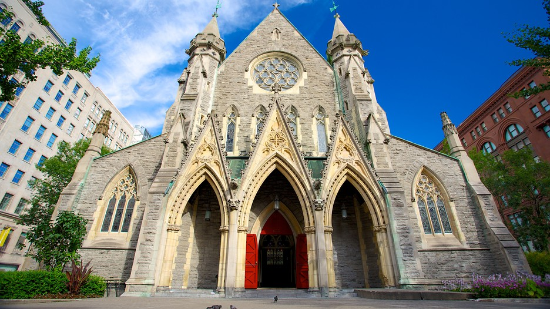
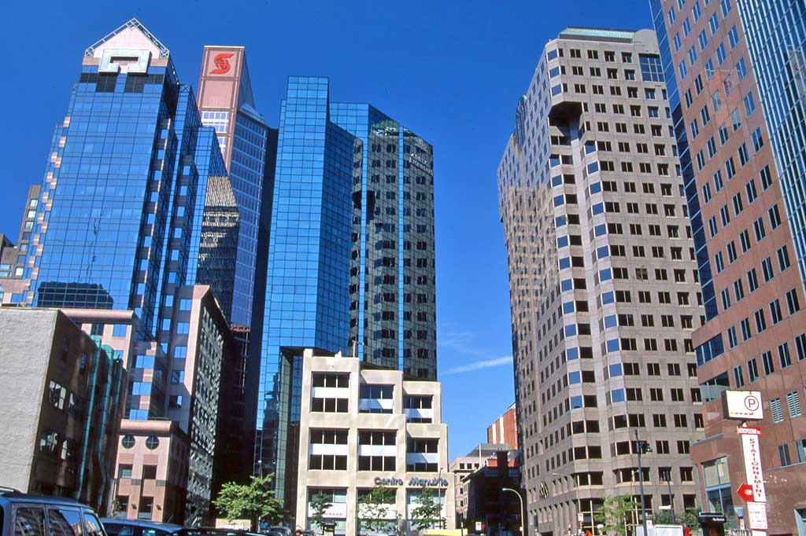
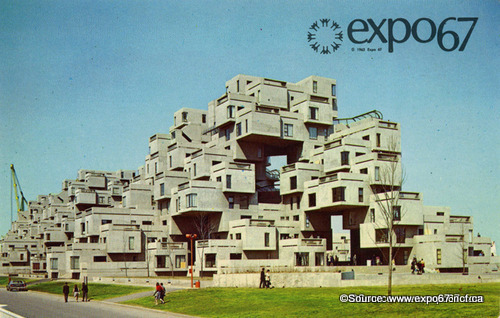
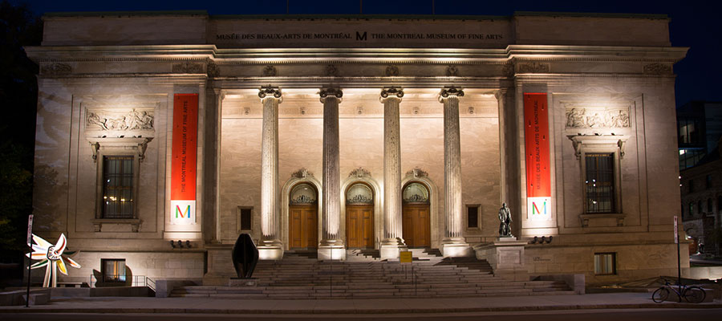

Art & Architecture
1. Church Architecture |
| 
Founded as a Roman Catholic French colony and nicknamed la ville aux cent clochers (the city of a hundred belltowers), Montréal is renowned for its churches.
The city has four Roman Catholic basilicas: Mary, Queen of the World Cathedral, Notre-Dame Basilica, St. Patrick Basilica, and Saint Joseph Oratory. The Oratory is the largest church in Canada, with the largest dome of its kind in the world after that of Saint Pete Basilica in Rome. Other well-known churches include Notre-Dame-de-Bon-Secours Chapel, which is sometimes called the Sailors' Church.
Following the British victory in the Seven Years' War, many protestant immigrants came to the city from England, Scotland and Ireland. This led to various Protestant churches being built to accommodate the growing community. The two most notable of these are the Saint James United Church and the Anglican Christ Church Cathedral, which was suspended above an excavated pit during the construction of the Promenades Cathédrale mall, part of Montréal Underground City.
|
2. Skyscrapers |
| 
Skyscraper construction in Montréal has swung between periods of intense activity and prolonged lulls. A two-year period from 1962 to 1964 saw the completion of four of Montréal ten tallest buildings: Tour de la Bourse, I. M. Pei's landmark cruciform Place Ville-Marie, the CIBC Building and CIL House. Its tallest buildings, the 51-storey 1000 de La Gauchetière and the 47-storey 1250 René Lvésque, were both completed in 1992.
Montréal places height-limits on skyscrapers so that they do not exceed the height of Mount Royal.[4] The city forbids any building from reaching an elevation higher than or 223 metres above mean sea level. Above-ground height is further limited in most areas and only a few downtown land plots are allowed to exceed 120 metres in height. The limit is currently attained by 1000 de La Gauchetiére and 1250 René Lévesque, the latter of which is shorter, but built on higher ground. The only way to reach higher than 1000 de La Gauchetiére while respecting this limit would be to build on the lowest part of downtown near Tour de la Bourse; the maximum height there would be approximately 210 metres.
|
3. Expo 67 |
| 
Pavilions designed for the 1967 International and Universal Exposition, popularly known as Expo 67, featured a wide range of architectural designs. Though most pavilions were temporary structures, several remaining structures have become Montréal landmarks, including the geodesic dome US Pavilion, now the Montréal Biosphére, as well as Moshe Safdie's striking Habitat 67 apartment complex.Expo 67 was Canada's main celebration during its centennial year. The fair had been intended to be held in Moscow, to help the Soviet Union celebrate the Russian Revolution's 50th anniversary; however, for various reasons, the Soviets decided to cancel, and Canada was awarded it in late 1962.
|
4. Montreal Museum of Fine Arts |
| 
Spread across various buildings and wings erected over the course of more than a century, the Montréal Museum of Fine Arts is home to a number of mind-expanding galleries. Among them is an area devoted to 20th-century Canadian Abstract Expressionists as well as a decorative-arts pavilion that spans eons of style, all spread across several open levels knitted together by terrazzo ramps and stairways.
|
5. Place des Arts |

The 1960s and 70s are often referred to as the "Quiet Revolution" in Quebec, as reformist governments led by the Liberal party brought about huge changes in the province's society. The period was also characterized by economic growth and grand projects, from highways to housing projects as well as the buildings constructed for Expo 67 and the 1976 Olympics, both in Montréal. One of these grand projects was the Place des Arts, home to three theaters which to this day welcome touring symphonies and theatrical companies (as well as being the home of the Opera de Montréal and the city's symphony). Seen here is the Edifice des Theatres, home to two different theaters. It was designed by the Montréal firm David, Barott, Boulva, Dufresne and completed in time for the 1967 Expo. The Place des Arts is also home to the Musée d'Art Contemporaine (MAC) in a more recent building designed by Jodoin Lamarre Pratte & Associés which opened in 1992.
|